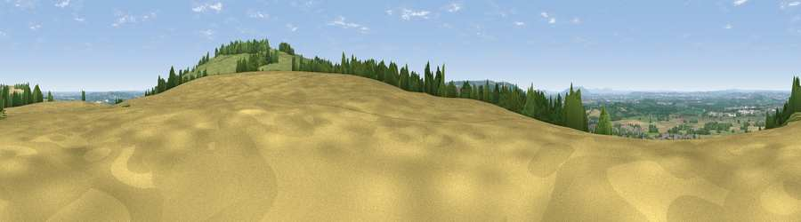

Viewpoint near Mickleton
#8683 in England · top 16% of its area beats it · near Mickleton · access?Where it is
The exact computed spot (SP 17425 43450). Click the marker for map links.
Public access: no public right of way or access land is recorded at this exact spot — it may be on private land. Computed from Natural England's CRoW access layer and OpenStreetMap rights of way — not the legal definitive map. Always verify locally.
The view, rendered

A 360° render of this exact spot computed from the terrain model, tree cover and land cover — summer colours, afternoon light, calibrated against photographs of famous viewpoints. Real trees, hedges and buildings will differ in detail.
The panorama
Grey silhouette: terrain skyline in each direction (720 bearings, Earth curvature and refraction included). Dashed green: skyline with trees (+15 m) and buildings (+8 m) as obstacles. Blue strip: how far the ground is visible on each bearing.
Where the view opens
Wedge length = distance to the farthest visible ground on that bearing (vegetation-aware). Rings at 10, 25 and 50 km.
What fills the view
49% grassland · 27% cropland · 21% woodland · 3% built-up
Angular shares of the visible panorama (visual magnitude), not map area. Landscape diversity 0.49 (0–1 Shannon).
Key numbers
More beautiful places nearby
The staircase of upgrades: each row has a higher view potential than everything closer. Driving times are estimates from straight-line distance, calibrated against real road routing — check an actual route before setting out.
| Place | Direction | Drive | Score |
|---|---|---|---|
| Viewpoint near Mickleton | N · 0 km | ~1 min | 65.9 |
| Viewpoint near Ilmington | ESE · 1 km | ~4 min | 68.1 |
| Viewpoint near Meon Vale | N · 2 km | ~5 min | 77.0 |
| Broadway Hill | SW · 10 km | ~19 min | 77.7 |
| Viewpoint near Elmley Castle | WSW · 20 km | ~34 min | 80.5 |
| Bredon Hill | W · 22 km | ~36 min | 83.0 |
| Summer Hill | W · 40 km | ~60 min | 85.4 |
| Worcestershire Beacon | W · 40 km | ~60 min | 87.1 |
52.08913, -1.74709 · source: screening · position refined by local search. Computed location — check access rights before visiting.